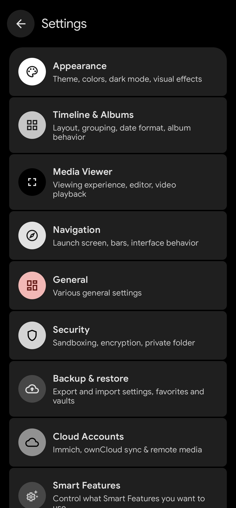
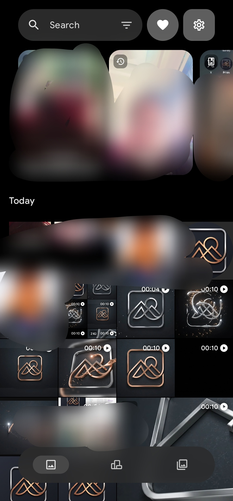
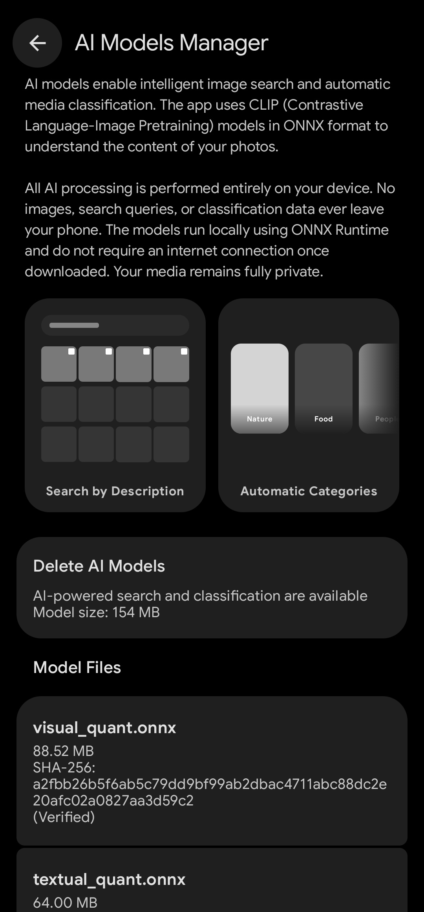
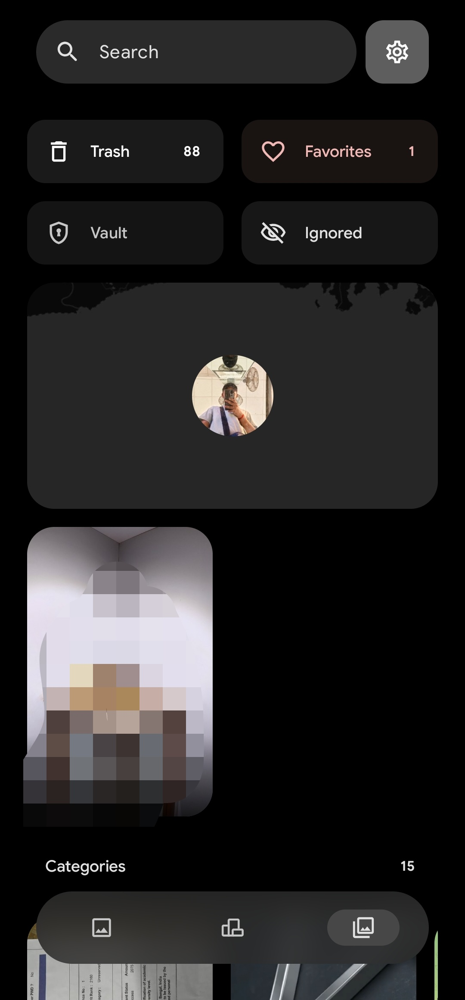
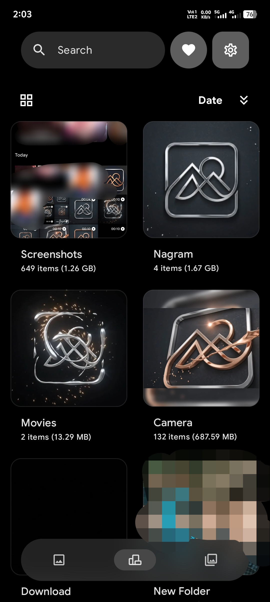

Fluid & Beautiful
Community-Driven & Open Source
Transparency and user empowerment are at the core of the experience.
-
Fully Open Source: The app's source code is entirely public, ensuring absolute transparency, zero hidden telemetry, and community-audited privacy.
-
Direct GitHub Access: Easily navigate to the project's GitHub repository directly from the bottom of the app's settings menu to track development, report bugs, or contribute.
-
Community-Powered Development: Built by Android enthusiasts for Android users, meaning feature updates are driven by actual user needs rather than corporate interests.
-
Version Transparency: The current build version is always clearly displayed right inside the app, keeping you informed.


Intelligent Organization & Discovery
Keep your memories perfectly organized without lifting a finger.
-
Dynamic Timeline: View your media in a beautifully organized timeline with auto-generated location tags (e.g., "Digha, India") and intelligent grouping.
-
Nostalgic Memories: Rediscover past moments with story cards, showing media from "1 year ago" or "2 years ago" right at the top of your feed.
-
Comprehensive Album Management: Easily navigate grid views of your device folders, displaying exact item counts and storage size for folders like Screenshots, Camera, and Downloads.
-
Quick Access Chips: Instantly access your Trash, Favorites, Vault, and Ignored media right from the top of the main screen.
-
Smart Categorization: Automatically categorize your media into distinct folders using visual recognition.
Privacy First: On-Device AI
Experience the power of artificial intelligence without compromising your data privacy.
-
Semantic Search: Search for photos by typing descriptions of the content, powered by advanced AI models.
-
100% Offline Processing: All AI image searching and automatic classification is performed entirely on your device using ONNX format models.
-
Zero Internet Required: Your data never leaves your phone; AI functions do not require an internet connection, ensuring your media remains strictly private.
-
Model Management: Easily download, manage, or delete specific AI model files (like visual and textual quant models) directly within the app to save space.


Uncompromising Privacy & Security
Keep your sensitive media safe with enterprise-grade security features.
-
Encrypted Vault: Move sensitive photos and videos into a dedicated Vault with configurable encryption behaviors.
-
App Sandboxing: Utilize metadata isolation mode and sandboxed image decoding to keep your data secure from other processes.
-
Secure Mode: Hide the app's preview in the recent apps menu to prevent shoulder surfing when switching applications.
-
Trash Protection: Utilize a 30-day trash can with an optional "Require confirmation on trash" setting to prevent accidental deletions.
Ultimate Customization
Tailor the app to match your exact aesthetic and workflow preferences.
-
Granular Theming: Choose from predefined color palettes, force dark mode, or use a high-contrast AMOLED mode optimized for specific screens.
-
Visual Effects: Enable UI enhancements like "Fancy Blur" for media backgrounds, auto-contrast for buttons, and animated media transitions.
-
Media Viewer Control: Customize your viewing experience with options like Full Brightness when viewing, video auto-play, and hiding the UI during video playback.
-
Navigation Tweaks: Switch between modern or old Material Navigation, hide search bars on scroll, and set your preferred default launch screen.

Hardware Requirements
To deliver lightning-fast on-device AI and advanced image processing, Prism is built exclusively for modern 64-bit (arm64-v8a) architectures. Older 32-bit devices (such as armeabi-v7a) are not supported in order to ensure an uncompromised, flagship-level experience.
Cloud Integration & Backup
Seamlessly sync and protect your library across your ecosystem.
Third-Party Cloud Sync
Natively connect to self-hosted and cloud solutions like Immich and ownCloud for seamless remote media access.
Easy Backup & Restore
Export a backup file of all your app settings, favorites, and vaults, and easily restore them to a new device.